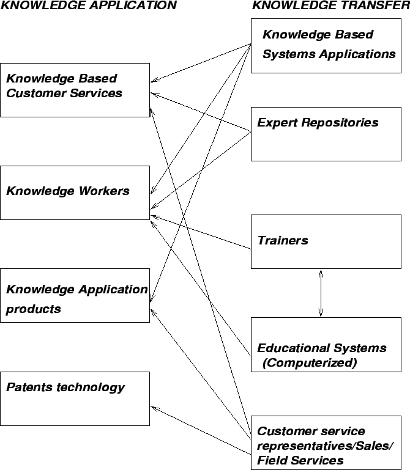

Next: Prerequisites for Transfer
Up: Transferring and Sharing Knowledge
Previous: Transferring and Sharing Knowledge
Contents
- Knowledge transfer is an integral part of organizational life.
- It represents the transmission of knowledge (conveying the knowledge
of one source to another source) and the appropriate use of
the transmitted knowledge.
- The goal is to promote/facilitate knowledge sharing, collaboration and
networking.
- It can involve accessing valuable/scarce resources, new expertise, new
insight, cross fertilization of knowledge and can create an organizational
environment of excellence.
- Collaboration implies the ability to connect diverse assets into unique
capabilities in pursuit of new opportunities mainly for organizational
growth.
- Knowledge transfer can be done by
working together,
communicating,
learning by doing,
using face-to-face discussions, or
embedding knowledge through procedures, mentoring, or documents exchange.
- Knowledge can be transferred from repositories to people, from team(s)
to individual(s), and between individuals.
- Factors:
- From where the knowledge is transferred: data warehouses, knowledge
bases,
experts etc.
- The media used: LAN, wireless transmission, secure/insecure lines,
encrypted/plain text etc.
- To where the knowledge is transferred: Another computer system,
a manager, a customer etc.
Figure 8.1:
Partial view of a Knowledge Management System for Transferring
and Sharing
Knowledge Applications
|

|
Some organizations know what to do, but for various reasons ignore the
available information and perform differently (creating the knowing-doing
gap). This problem should be recognized to help organizations making
corrections and setting up a knowledge transfer environment for the
benefit of all the employees.
Next: Prerequisites for Transfer
Up: Transferring and Sharing Knowledge
Previous: Transferring and Sharing Knowledge
Contents
Knowledge Management Systems
2004-11-01